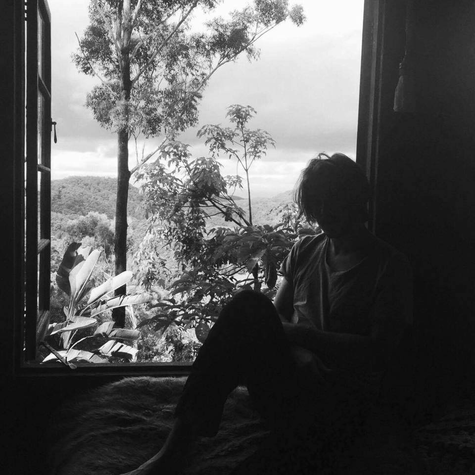

PROFESSIONAL
Hi. I'm Jack. I'm currently studying to be a full-stack web developer
at Coder Academy in Brisbane, Australia. I currently have experience in Ruby, HTML5, and
CSS (including Sass). By the end of the 25 week bootcamp I will have also learnt to utilise
Ruby on Rails and the MERN stack. I'm super excited apply my skills to develop unique and
innovative, yet simple solutions to everyday problems.
//
I'm deeply interested in cybersecurity, and its role in the tech industry.
It is set to play a pivotal role as we move forward in the coming years. Getting my feet wet in
cybersecurity has been an overwhelming experience to say the least. The diversity of the field is
so exciting to me, it holds a potential lifetime's worth of learning. In my spare time I've been
participating extensively in CTFs and teaching myself the basics of pentesting with tools like Nmap,
Metasploit, Wireshark, and Burpsuite in a Kali Linux environment.
//
I completed Year 12 at Immanuel Lutheran College on the Sunshine Coast, and
spent some time at the University of Queensland studying Science before deciding it wasn't for me.
After leaving university I worked for a year as a theatre wardsman at the Sunshine Coast University
Private Hospital. I decided to make the move back to Brisbane and ended up working in the laboratory
at Sullivan Nicolaides Pathology. I ended up staying there for four years, only recently leaving
to study full-time at Coder Academy.
